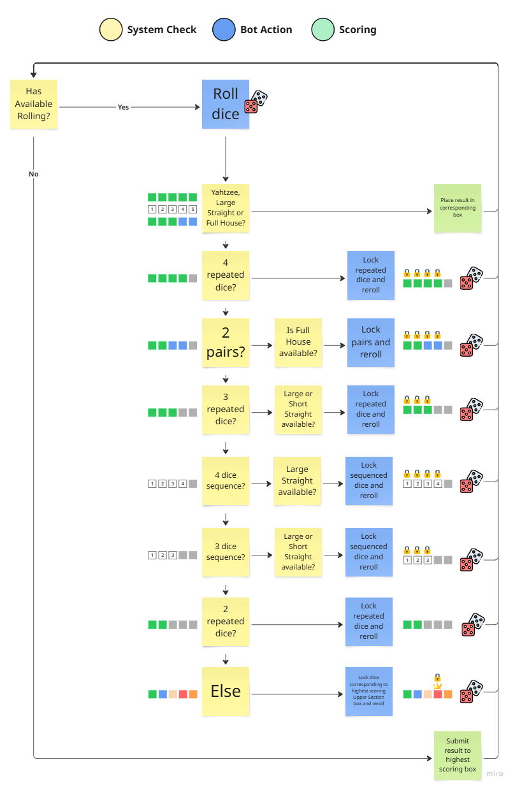
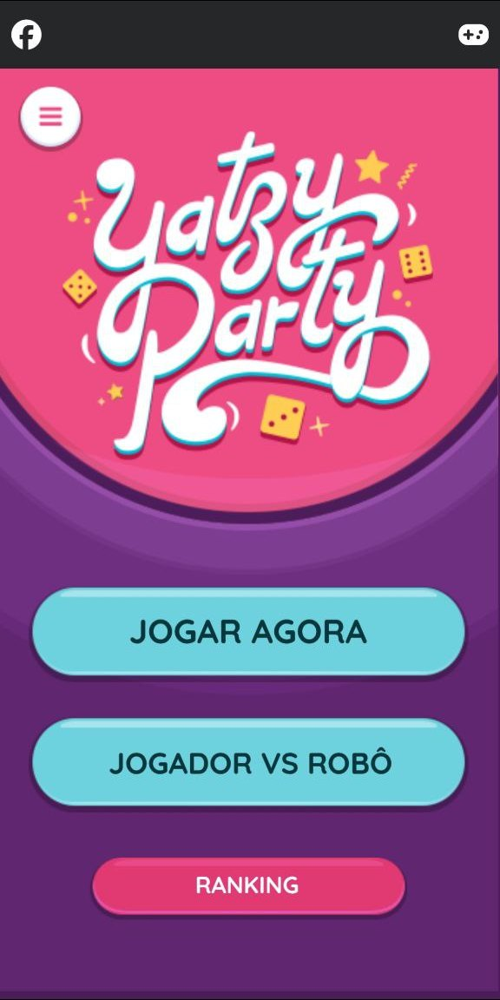
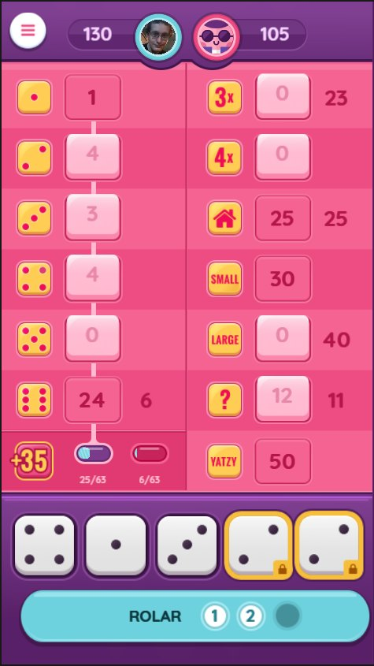

Yatzy Party
- StudioGazeus Games
- RoleGame Designer
- PlatformFacebook Instant Games
Project Overview
Yatzy Party is a game with both Instant Games and Mobile (Android/iOS) versions. This is the Instant Games one, a game built to explore the Instant Games platform and that paved the way for the more robust Mobile version that came after.
My Responsibilities
- Designing the bot behavior: a flowchart of best practices that provides a moderate challenge to new players, helping them improve and preparing them for PvP matches against more experienced players.
Key Results
- A single-player bot that successfully introduced players to the game and prepared them for multiplayer matches
Understanding the Bot
Yatzy Party’s bot follows a flowchart and plays with moderate competence.
New players will find it challenging, and its goal is to empower them so they fare better against multiplayer opponents.
What the bot doesn’t know is:
- That prioritizing filling the Upper Section is a good strategy, as you gain extra points for hitting a threshold.
- That, depending on your opponent’s score during the match, you need to push your luck or be more conservative.
Those two points are what, once mastered, will allow the player to consistently beat the bot.

Screenshots

